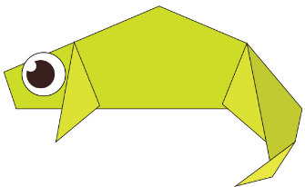

Oriami Designs

Camel
Interesting Facts About Camel
- Camels have three sets of eyelids and two rows of eyelashes to keep sand out of their eyes.
- Camels can completely shut their nostrils during sandstorms.
- Their humps let them store up to 80 pounds of fat which they can live off for weeks and even months!
- Camels can travel at up to 40 miles per hour – the same as a racehorse!
Chameleon
Interesting Facts About Chameleon
- There are around 160 species of chameleon.
- Chameleons live in warm varied habitats.
- Chameleon change color for camouflage but this is not always the main reason. Some show darker colors when angry, or when trying to scare others. Males show light multi-colored patterns when vying for female attention. Desert varieties change to black when its cooler to absorb heat, then a light grey to reflect heat.
- The chameleons' eyes can rotate and focus separately on 180-degree arcs, so they can see two different objects at the same time. This gives them a full 360-degree field of vision.
Pigeon
Interesting Facts About Pigeon
- Size of pigeon depends on the species. Large pigeons can reach 19 inches in length and 8.8 pounds of weight. Small pigeons can reach 5 inches in length and up to 0.8 ounces of weight.
- Pegions can fly at the altitude of 6000 feet.
- Pigeons can move their wings ten times per second.
- Pigeons can fly at the speed of 50 to 60 miles per hour. Fastest known pigeon managed to reach speed on 92 miles per hour.